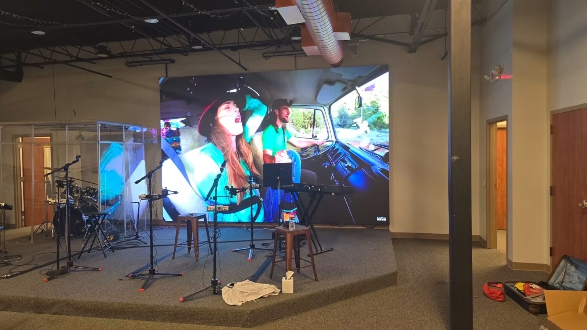
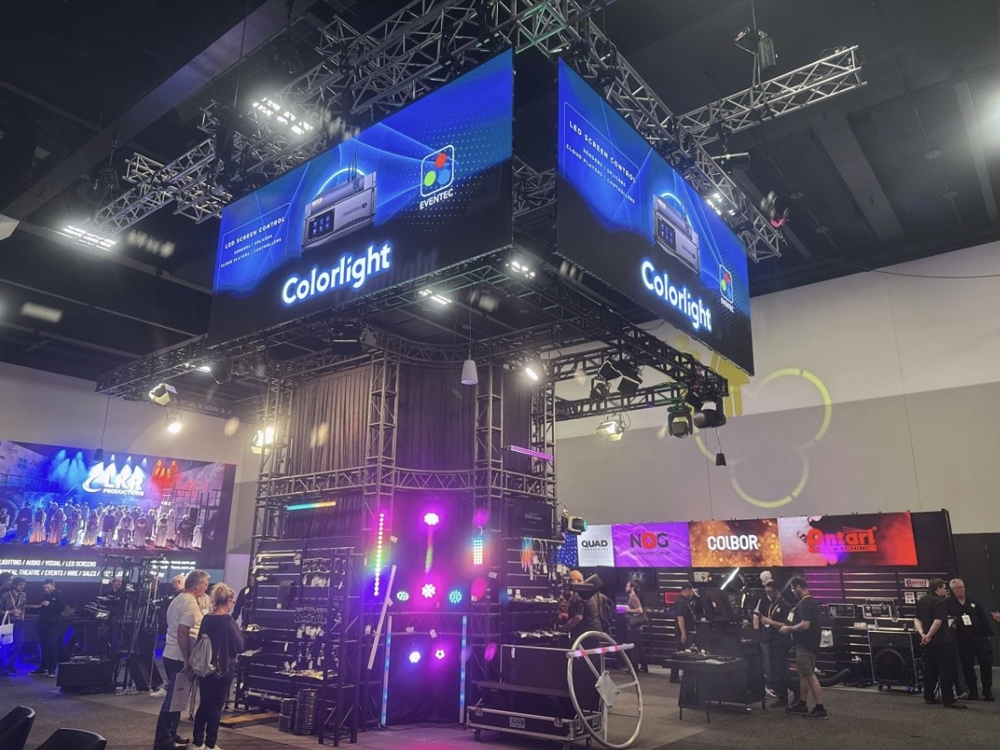

By David
What is an led display production audit? An led display production audit is a check of a factory's production process, verifying that it can build the screens to the required standard. It looks at the line, the process, and the quality control, beyond the factory's general capability. This 2026 guide explains it.
A factory can be a real manufacturer and still have a weak process. The production audit looks at how the screens are made, not only whether the factory exists. The process decides the quality, so the audit checks the process as well as the factory.
This led display production audit guide is written for buyers with a significant order. It covers what the audit checks, the process, and how to use the findings.
The audit checks the production line, the process, the equipment, and the quality control. It looks at how the modules are assembled, how the cabinets are built, and how the finished screens are tested. The process is the focus.
| Area | What Is Checked | Why It Matters |
|---|---|---|
| Line and equipment | Capacity and tools | Can it build the order |
| Process | Steps and procedures | Consistent quality |
| Quality control | Tests and records | Catches defects |
| Components | Sourcing and storage | Correct materials |
| Finding | Action |
|---|---|
| Weak quality step | Tighten the requirement |
| No records | Require documentation |
| Subcontracting | Confirm in-house build |
| Capacity gap | Adjust the order |
A factory audit assesses the company, its status, and its general capability. A production audit focuses on the process for a specific product, checking the line and the quality control in detail. The two overlap, but the production audit goes deeper into the process.
For a large or complex order, a production audit gives more assurance than a general factory audit. It confirms the line can build the product to the standard. The buyer should choose the audit for the risk.
The assembly process covers the module build, the cabinet assembly, the wiring, and the testing. The audit checks each step against the standard. A process that skips a step risks a defect that appears later.
The audit also checks the process controls, such as the torque on the fixings, the ESD protection, and the cleanliness. These details decide the quality, and a weak process shows in the field. The audit catches the weak process.
The quality control includes the incoming component inspection, the in-process checks, and the final test and aging. The audit checks that each is done and recorded. A factory with all three controls the quality; one without relies on luck.
The audit checks whether the process is documented and the records kept. A factory with records can trace a defect and show its tests. One without records cannot, as noted in the factory audit guide. The records are evidence of the process.
The buyer should ask for the process records with the order. The records show the screen was built to the standard. A factory that produces records is easier to work with than one that does not.
The audit findings feed into the order. A weak area becomes a stronger requirement in the purchase order, as noted in the audit report guide. The buyer should act on the findings, not only file them.
The findings also inform the inspection plan. If the audit found a weak quality control step, the buyer inspects that step more closely before shipment. The audit and the inspection work together.
A production audit is best before a large or complex order, and for a new supplier. It gives assurance before the commitment. For a small repeat order from a known supplier, it may not be needed.
The audit can also be repeated periodically for an ongoing supplier, to confirm the process stays consistent. A process can drift over time, especially after a change of staff or equipment. The periodic audit catches the drift.
The common mistakes are auditing only the factory and not the process, accepting claims without records, and not acting on the findings. Others include a brief that is too general and a follow-up that is missed. Each weakens the audit's value.
The remedy is to audit the process, demand the records, act on the findings, and repeat the audit. The production audit then confirms what the factory can really do.
The audit is stronger with a brief that names the buyer's concerns, such as the driver IC, the aging test, or the capacity. A generic brief produces a generic report. The brief focuses the audit on what matters to the order.
The buyer should give the auditor the specification, the component list, and the concerns. The auditor then checks the process against the requirement. The preparation turns the audit into a targeted review.
The audit is done by a third party, the buyer's team, or the factory itself. A third party is the most independent, as noted in the audit report guide. The buyer should use a third party where the order justifies it.
The team should have electronics experience, so it understands the process. A generalist auditor misses the LED-specific points. The buyer should choose the team for the product.
The report records the findings, often with scores and photographs. The buyer should read the sections, not only the total guide. The detail behind the score is what informs the decision.
The report should list the corrective actions for the findings. A finding with a fix is a manageable risk; one without is a concern. The report is the basis for the requirement in the order.
After the audit, the factory should address the findings with corrective actions, each with a date. The buyer should track the actions and confirm they are done. A factory that acts on the findings improves the process.
The corrective actions are part of the relationship. A factory that welcomes the audit and acts on it is a good partner. One that resists the findings is a risk, whatever the audit's score.
The production audit should be done before the order, so the buyer can choose the factory or set the requirement. An audit after the order is a check on the goods, not the process. The timing gives the audit its value.
For an ongoing supplier, the audit can be repeated to confirm the process stays consistent. The periodic audit catches a drift in the process. The buyer should set the interval for the risk.
The audit costs a fee, often based on the factory's size and location. Against a large order, the fee is small insurance. The audit catches the process problems before the order, when they are cheapest to avoid.
The buyer should weigh the fee against the risk. A large or first order justifies a production audit; a small repeat order may not. Match the audit's depth to the commitment, as with any verification.
The production audit reduces the buyer's risk by confirming the factory can build the product. For a large order, the risk of a failed production is high, and the audit lowers it. The audit is a risk management tool.
The audit also supports the buyer's own customers, who may require a verified supply chain. The audit record shows the buyer checked the production. The record is part of the buyer's compliance.
The buyer should keep the audit with the project file, so the risk assessment is documented. A future order or a customer query draws on the record. The audit is part of the due diligence.
For an ongoing supplier, the audit frequency depends on the risk and the supplier's performance. A critical supplier may be audited annually; a low-risk one may be audited less. The frequency matches the exposure.
A change at the factory, such as new equipment or a new sub-supplier, warrants a re-audit. The change can affect the process, as noted in the sub-supplier guide. The re-audit confirms the process still holds.
The buyer should set the frequency and the triggers in the supplier's plan. A regular and triggered audit keeps the process under review. The audit is part of the ongoing supplier management.
The led display production audit checks the factory's process, line, and quality control for a product. It confirms the capability beyond the general factory audit. Use it before a large order or with a new supplier.
Buyers who audit the process catch the weaknesses before the order and build a stronger requirement. The audit is the deep check that the factory and the process can deliver.

For this requirement our range covers it directly: the X Series (front/rear service, common parts across platforms) and the series overview for spare-part lists.
Ask us for the production process and quality records you need to audit our LED display manufacturing.
Request Production RecordsChat on WhatsApp